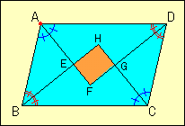

|
In the right figure,ABCD is a parallelogram.The lines AF,BH,CH and DF
are the bisectors of the angles A,B,C and D.EFGH is the quadrilateral
formed by the four lines. (1)What quadrilateral is EFGH? Why that? (2)What figure is ABCD when EFGH is a square? (3)What figure is ABCD when E,F,G and H meet at the same point. |
 |
| Drag red point. |